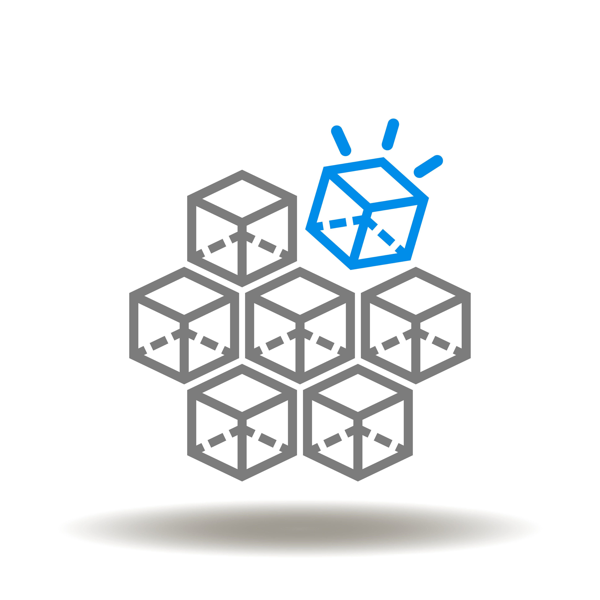

Introduction
Types of content in XR experiences
Figure 1

Villa of the Mysteries (Pompeii) - frescos 01,
shakko, under CC BY-SA 4.0,
via Wikimedia
Commons
_-_frescos_01.jpg){kind=link}
Figure 2

Panoramic view of London, from the top of Albion
Mills which was by the south end of Blackfriars Bridge,Henry Aston
Barker, 1972, Government Art Collection, under CC BY-SA 4.0,
via Wikimedia
Commons
{kind=link}
Figure 3

Panorama of Sydney from Lavender Bay (1875),
Bernard Otto Holtermann (1838-1885) and Charles Bayliss (1850-1897),
Public domain, under CC BY-SA 4.0,
via Wikimedia
Commons
.jpg){kind=link}
Figure 4

360 degree panorama photograph of Giza pyramid
complex, kallerna, under CC BY-SA 3.0,
via Wikimedia
Commons
{kind=link}
Figure 5

Example of 360° panoramic image of the Thean Hou
Temple © Dennis Sylvester Hurd
Figure 6

Example of vectorised-3D environment showing a
user in an interactive and immersive environment © National Institute of
Standards and Technology
Figure 7


Degrees of Freedom
Figure 1

Illustrative picture of 3 degrees of freedom
(DOF) for a solid motion © LaurensvanLieshout
Figure 2

Cardboard VR glasses. © Sajjadzokaei
Figure 3

360° panorama of the Piazza Anfiteatro in Lucca,
Italy. The former ancient amphitheatre was turned into residential
buildings, shops and restaurants that surround the therefore oval
piazza. © H005
Figure 4

User in a virtual environment seen with a camera
acting as a third person point of view. © Pierre-faure
Figure 5

Distributing 3DoF Experiences
3DOF Tutorial
Figure 1

Search in Docker Hub for
karinardz/my-own-apache2
Figure 2

Start in DockerDesktop the image
karinardz/my-own-apache2
Figure 3

Load localhost on webserver will visualise the
360 image.
Figure 4

Access the HTML code for the web page.
Display technologies for 6DoF Experiences
Figure 1

The Cave Automatic Virtual Environment at EVL,
University of Illinois at Chicago. This shows a user (me) inside the
CAVE. It was taken when the CAVE was being upgraded to use new
5000-lumen Christie Mirage DLP projectors. © User:Davepape - own work on
Wikimedia
Commons
{kind=link}
Figure 2

Figure 3

Audience wearing special glasses watch a 3D
“stereoscopic film” at the Telekinema on the South Bank in London during
the Festival of Britain © The National Archives UK under the Open
Government Licence version 1.0 (OGL v1.0).
{kind=link}
Figure 4


Figure 5
![Circularly polarized glasses, used for stereoscopic viewing. © Dave Pape (CC BY-SA 4.0 Wikimedia Commons)[https://commons.wikimedia.org/wiki/File:Circularly_polarized_glasses.jpg]](https://upload.wikimedia.org/wikipedia/commons/6/66/Circularly_polarized_glasses.jpg)
Circularly polarized glasses, used for
stereoscopic viewing. © Dave Pape (CC BY-SA 4.0 Wikimedia Commons)[https://commons.wikimedia.org/wiki/File:Circularly_polarized_glasses.jpg]
{kind=link}
Figure 6
![Visualization how active 3D TVs work © (CC BY-SA 4.0 Wikimedia Commons)[https://en.wikipedia.org/wiki/Active_shutter_3D_system#/media/File:Active-3d-shutter-technology.gif]](https://upload.wikimedia.org/wikipedia/commons/b/bb/Active-3d-shutter-technology.gif)
Visualization how active 3D TVs work © (CC BY-SA
4.0 Wikimedia Commons)[https://en.wikipedia.org/wiki/Active_shutter_3D_system#/media/File:Active-3d-shutter-technology.gif]
{kind=link}
Figure 7

Figure 8

Dual screen for a VR headset
Figure 9

Figure 10

It’s a direct result of the number of pixels and
the viewing distance.
Distributing 6DoF experiences
Figure 1
Steam Logo © Steam, Public domain, via Wikimedia
Commons
Figure 2

© GithHub (MIT http://opensource.org/licenses/mit-license.php or OFL http://scripts.sil.org/cms/scripts/page.php?item_id=OFL_web),
via Wikimedia Commons
Figure 3

SteamWorks © Steam
Interoperable XR
Figure 1

Figure 2
 The community is tackling interoperability in various ways:
Figure 3

OpenXR provides cross-platform, high-performance
access directly into diverse XR device runtimes across multiple
platforms. OpenXR enables applications and engines, including WebXR, to
run on any system that exposes the OpenXR APIs. © Khronos Group
2023
Figure 4

Figure 5

Figure 6